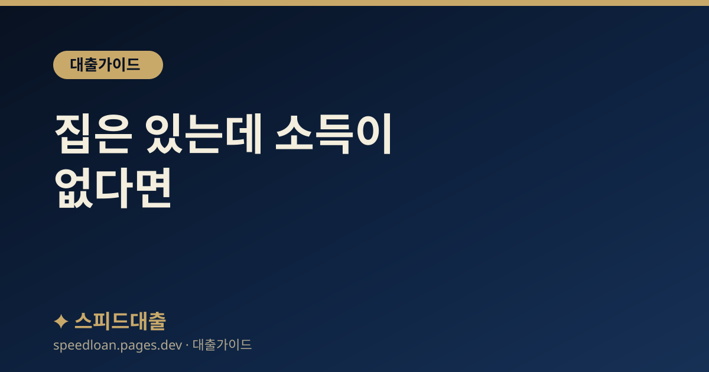

집은 있는데 소득이 없다면 — 주택연금(역모기지) 기초와 판단
내 집에 계속 살면서 매달 연금을 받는 주택연금은 소득이 끊긴 노후의 선택지가 됩니다. 가입 요건과 지급 방식, 반드시 알아야 할 장단점을 정리했습니다.

집은 있는데 매달 쓸 돈이 없을 때
은퇴 후 소득은 끊겼는데 재산의 대부분이 살고 있는 집 한 채인 경우가 많습니다. 집을 팔자니 살 곳이 없고, 그냥 두자니 생활비가 부족한 상황입니다.
이때 ‘집에 계속 살면서’ 그 집을 담보로 매달 연금을 받는 방법이 주택연금(역모기지)입니다. 급하게 집을 처분하거나 무리하게 대출 갚기 빠듯해졌다면 상황으로 몰리기 전에 검토할 수 있는 선택지입니다.
주택연금이 뭔가 — 집을 담보로 매달 연금
주택연금은 한국주택금융공사가 보증하는 제도로, 내 집을 담보로 맡기고 그 집에 계속 거주하면서 매달 일정액을 연금처럼 받는 구조입니다. 일반 담보대출과 달리 ‘매달 갚는’ 것이 아니라 ‘매달 받는’다는 점이 가장 큰 차이입니다.
받은 연금과 이자는 나중에(대개 부부 모두 사망 후) 집을 처분해 정산합니다. 즉 살아 있는 동안은 상환 압박 없이 거주와 소득을 동시에 유지하는 것이 핵심입니다.
누가 가입할 수 있나
가입에는 나이와 주택에 대한 요건이 있습니다. 구체적 기준은 제도 변경으로 달라질 수 있어, 실제 가입은 한국주택금융공사 안내로 확인하는 것을 전제로 합니다.
- 부부 중 한 명 이상이 일정 연령(대체로 만 55세 이상) 요건 충족
- 본인(부부) 소유의 주택으로, 공시가격 등 기준 이내
- 원칙적으로 해당 주택에 실제 거주
요건 충족 여부와 예상 수령액은 공사 홈페이지의 예상연금 조회로 미리 가늠할 수 있습니다.
얼마나 받나 — 결정 요인
매달 받는 금액은 주로 아래에 따라 달라집니다.
- 가입 시점의 나이 — 나이가 많을수록 매달 받는 금액이 커지는 경향
- 주택 가격 — 집값이 높을수록 수령액이 큼
- 지급 방식 — 평생 매달 받는 방식, 일정 기간 받는 방식 등 선택
같은 집이라도 언제·어떤 방식으로 가입하느냐에 따라 수령액이 달라지므로, 여러 방식을 비교해 보는 것이 좋습니다.
큰 장점 — 평생 거주와 연금
- 내 집에 계속 살면서 매달 안정적인 소득을 받는다
- 집값이 나중에 내려가도, 받은 연금이 집값을 초과했다고 그 차액을 상속인에게 청구하지 않는 방식으로 설계되어 있다
- 부부 중 한 명이 먼저 사망해도 남은 배우자에게 같은 금액이 계속 지급된다
즉 ‘오래 살수록 손해’가 아니라, 오래 살아도 거주와 소득이 보장된다는 점이 큰 장점입니다.
반드시 알아야 할 점
장점이 큰 만큼, 결정 전에 다음도 이해해야 합니다.
- 집을 물려주기 어려워질 수 있다 — 나중에 집을 처분해 정산하므로 상속 재산이 줄 수 있음
- 중도 해지 시 그동안 받은 돈과 이자·비용을 정산해야 함
- 받은 연금에는 이자·보증료가 함께 쌓인다
그래서 상속 계획이 중요한 가정이라면 가족과 충분히 상의해야 합니다. 계약 조건은 대출 계약서 확인처럼 꼼꼼히 확인하세요.
다른 방법과 비교
집을 활용하는 방법이 주택연금만 있는 것은 아닙니다. 목돈이 필요한지, 매달 소득이 필요한지에 따라 선택이 달라집니다.
큰 목돈이 필요하면 일반 주택담보대출 한도(LTV)를 알아볼 수 있지만, 이는 매달 갚아야 하는 부담이 생깁니다. 반대로 상환 부담 없이 매달 소득을 원하면 주택연금이 맞습니다. 저소득 노후라면 정책 서민금융 상품 등 다른 지원도 함께 확인하세요.
정리
주택연금은 ‘집에 계속 살면서 그 집을 소득으로 바꾸는’ 방법입니다. 매달 갚는 대출이 아니라 매달 받는 연금이라, 소득이 끊긴 노후에 거주와 생활비를 동시에 해결할 수 있습니다. 다만 상속 재산이 줄 수 있으니 가족과 상의하고, 요건·수령액은 한국주택금융공사에서 확인하세요.
자주 묻는 질문
주택연금에 가입하면 집을 뺏기나요?
아닙니다. 집을 담보로 맡기지만 소유권은 본인에게 있고, 그 집에 계속 거주하면서 매달 연금을 받습니다. 받은 연금과 이자는 대개 부부 모두 사망 후 집을 처분해 정산하는 구조입니다.
집값이 떨어지면 받은 연금을 토해내야 하나요?
그렇지 않도록 설계되어 있습니다. 나중에 정산할 때 받은 연금 총액이 집값을 넘더라도 그 차액을 상속인에게 청구하지 않는 방식이라, 집값 하락 위험을 개인이 모두 떠안지 않습니다. 자세한 조건은 한국주택금융공사에서 확인하세요.
매달 얼마나 받을 수 있나요?
가입 시점의 나이, 주택 가격, 선택한 지급 방식에 따라 달라집니다. 나이가 많고 집값이 높을수록 매달 받는 금액이 커지는 경향이 있습니다. 공사 홈페이지의 예상연금 조회로 대략적인 금액을 미리 확인할 수 있습니다.
나중에 마음이 바뀌면 해지할 수 있나요?
중도 해지는 가능하지만, 그동안 받은 연금과 쌓인 이자·비용을 정산해야 합니다. 또 해지 후 재가입에는 제약이 있을 수 있으므로, 가입 전에 지급 방식과 상속 계획까지 가족과 충분히 상의해 결정하는 것이 좋습니다.
공식 참고 기관
본 사이트의 콘텐츠는 아래 공공·공식 기관의 공개 자료를 참고하여 작성하며, 구체적인 조건과 최신 제도는 해당 기관에서 직접 확인하시기 바랍니다.
본 사이트는 대출을 직접 제공하거나 중개하지 않으며, 금융상품 가입을 권유하지 않습니다. 모든 정보는 일반적인 참고용이며, 실제 대출 가능 여부, 한도, 금리, 조건은 금융회사 심사와 개인 신용상태에 따라 달라질 수 있습니다.